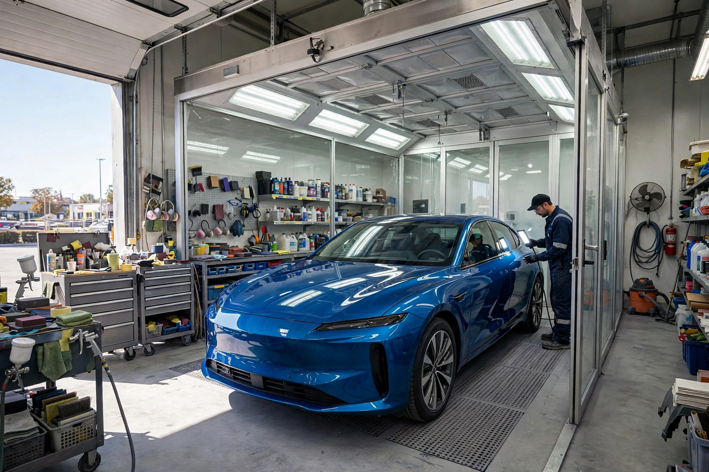
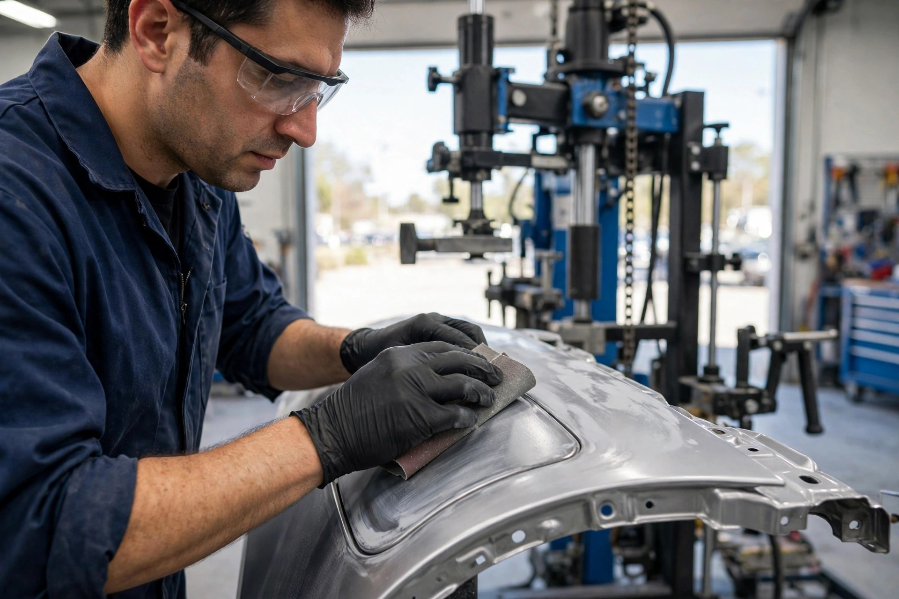
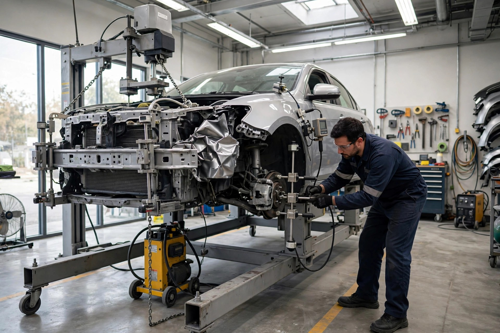
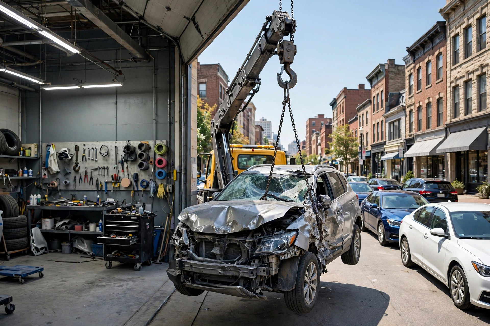

Collision Repair
Accident damage made like new again — panels, bumpers and body lines restored with care.

Pittsburgh, Pennsylvania · Rated 4.5 out of 5 by 17 customers
Flora Auto Body on W Warrington Ave — collision repair, frame machine straightening and paint booth refinishing. Honest work, explained clearly, done the first time.
What we do
Accident damage made like new again — panels, bumpers and body lines restored with care.
Our in-house frame machine pulls your car's structure back to factory specifications after a hit.
Our professional paint booth delivers deep, even color with a factory-style gloss finish.
Can't drive it in? We tow your car to our shop so repairs can start without the hassle.
Dents, dings and scratches straightened and blended — your car looks like the damage never happened.
Interior and exterior detailing that leaves your car clean, polished and road-ready.

Why choose us
Flora Auto Body is a working Pittsburgh body shop: towing, collision work, an in-house frame machine and a professional paint booth — everything your car needs, under one roof.
The shop in action


Word on the street
Good to know
No — stop by during our hours, or call (412) 481-8697 first so we can take a look right away.
Yes — we offer towing, so even if your car can't be driven, we can bring it in for repairs.
Yes — we have an in-house frame machine that pulls the structure back to factory specifications.
Monday to Friday, 8:30 AM to 6:00 PM. Closed Saturday and Sunday.
Come see us